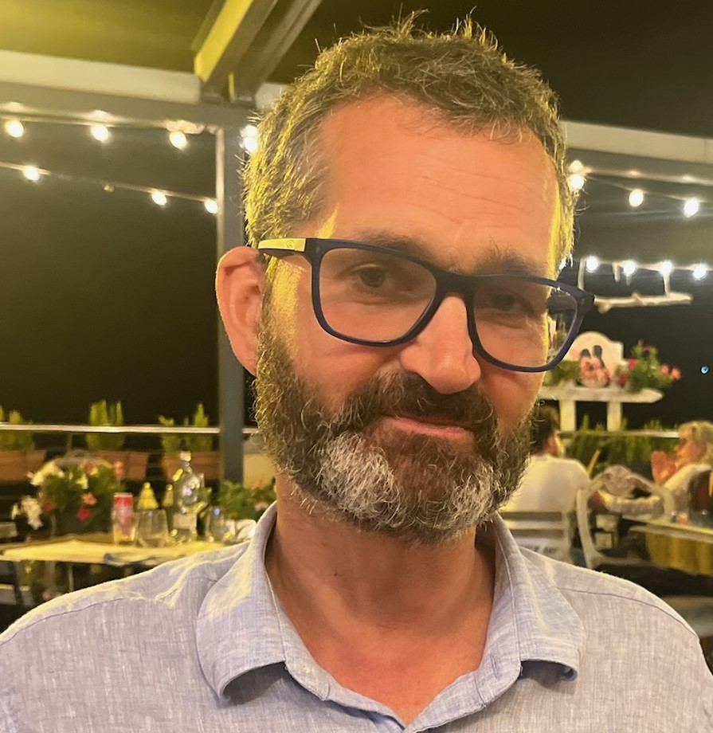

Published: 13.8.2025

Jeg er en person med mange interesser. Jeg er veldig glad i utendørsaktiviteter, lidenskaplig interessert i musikk, elsker kona og ungene høyt, har en virkelig rar nerdete glede av å programmere, og mye mer. Det jeg er mest oppatt for tiden er hva noen kaller metakrisen, andre menneskehetens utfordring. Jeg har fordypt meg i dette tema i over ti år nå, og jeg klarer ikke å stoppe. Jeg lærer mer om situasjonen ved å lese bøker, lytte til podcaster, og ved å diskutere det med andre. Det har ført til at jeg har satt meg inn i temaer innen filosofi, psykologi, sosiologi, alternative økonomiske teorier, og klimavitenskap. Et mål med denne nettsiden er å kunne dele noen av de personene, bøkene og podcastene som har inspirert meg. Ta en titt.
Applebaum, A. (2020). Twilight of Democracy: The Seductive Lure of Authoritarianism. Knopf Doubleday Publishing Group.
Ariely, D. (2009). Predictably irrational HarperCollins UK.
Ayres, R. U., & Ayres, E. H. (2009). Crossing the Energy Divide: Moving from Fossil Fuel Dependence to a Clean-Energy Future. Pearson Prentice Hall.
Bardhan, P. (2022). A World of Insecurity: Democratic Disenchantment in Rich and Poor Countries. Harvard University Press.
Barnes, P. (2014). With Liberty and Dividends for All: How to Save Our Middle Class When Jobs Don’t Pay Enough. Berrett-Koehler Publishers.
Bjørkdahl, K., & Lykke, K. V. (2023). Hva vi spiser når vi spiser kjøtt. Res Publica.
Bloodworth, J. (2018). Hired: Six Months Undercover in Low-Wage Britain. Atlantic Books.
Brand, U., & Wissen, M. (2021). The Imperial Mode of Living: Everyday Life and the Ecological Crisis of Capitalism. Verso Books.
Brøgger, J. (1993). Kulturforståelse: En nøkkel til vår internasjonale samtid. Damm.
Bullough, O. (2018). Moneyland: Why Thieves And Crooks Now Rule The World And How To Take It Back. Profile Books.
Burnett, D. (2016). The Idiot Brain: A Neuroscientist Explains What Your Head is Really Up To. Guardian Faber Publishing.
De Oliveira, V. M. (2021). Hospicing modernity: Facing humanity’s wrongs and the implications for social activism. North Atlantic Books.
DiAngelo, R. (2019). White Fragility: Why It’s So Hard for White People to Talk About Racism. Penguin UK.
Dixson-Declève, S., Gaffney, O., Ghosh, J., Randers, J., Rockström, J., & Stoknes, P. E. (2022). Earth for all: A survival guide for humanity : a report to the Club of Rome (2022) fifty years after The Limits to Growth (1972). New Society Publishers.
Dorling, D. (2020). Slowdown: The End of the Great Acceleration—and Why It’s Good for the Planet, the Economy, and Our Lives. Yale University Press.
Durkheim, É. (1951). Suicide: A Study in Sociology (G. Simpson, Red.; J. A. Spaulding & G. Simpson, Overs.). The Free Press.
Fisher, M. (2009). Capitalist Realism: Is There No Alternative? John Hunt Publishing.
Fisher, R., & Ury, W. (2012). Getting to Yes: Negotiating an agreement without giving in. Random House.
Frankl, V. E. (2017). Man’s Search for Meaning. Beacon Press.
Fukuyama, F. (2006). The End of History and the Last Man. Simon and Schuster.
Fukuyama, F. (2014). Political Order and Political Decay: From the Industrial Revolution to the Globalisation of Democracy. Profile Books.
Fukuyama, F. (2018). Identity: The Demand for Dignity and the Politics of Resentment. Farrar, Straus and Giroux.
Gabrielsen, B. (2020). Skjermslaver. Kagge forlag as.
Garces, M. (2024). New Radical Enlightenment: Philosophy for a Common World. Verso Books.
Giblin, R., & Doctorow, C. (2022). Chokepoint Capitalism. Beacon Press.
Gleeson-White, J. (2015). Six Capitals, or Can Accountants Save the Planet?: Rethinking Capitalism for the Twenty-First Century. W. W. Norton & Company.
Goodhart, D. (2017). The Road to Somewhere: The Populist Revolt and the Future of Politics. Oxford University Press.
Graeber, D. (2012). Debt: The First 5000 Years. Penguin Books Limited.
Gray, J. (2015). Straw Dogs: Thoughts On Humans And Other Animals. Granta Books.
Habermas, J. (1989). The Structural Transformation of the Public Sphere: An Inquiry Into a Category of Bourgeois Society. Polity Press.
Harari, Y. N. (2014). Sapiens: A Brief History of Humankind: The multi-million copy bestseller. Random House.
Hickel, J. (2020). Less is More: How Degrowth Will Save the World. Random House.
Hippe, I. (2021). Korstoget mot velferdsstaten: På innsiden av nyliberale tenketanker. Svein Sandnes Bokforlag.
Horkheimer, M., Adorno, T. W., & Noeri, G. (2002). Dialectic of Enlightenment. Stanford University Press.
Hull, R. B., Robertson, D. P., & Mortimer, M. (2020). Leadership for Sustainability: Strategies for Tackling Wicked Problems. Island Press.
Isaksen, T. R. (2023). Ingen tror på nåtiden: Drømmene fra 1989, hvorfor verden blir mørkere og jakten på lyspunkter. Kagge Forlag.
Jackson, T. (2016). Prosperity without Growth: Foundations for the Economy of Tomorrow. Taylor & Francis.
Jackson, T. (2021). Post Growth: Life after Capitalism. John Wiley & Sons.
Jeffries, S. (2022). Everything, All the Time, Everywhere: How We Became Postmodern. Verso Books.
Kahneman, D. (2011). Thinking, Fast and Slow. Penguin UK.
Klein, N. (2019). On Fire: The Burning Case for a Green New Deal. Penguin UK.
Lasch, C. (1991). The Culture of Narcissism: American Life in an Age of Diminishing Expectations. W. W. Norton & Company.
Latour, B. (2018). Down to Earth: Politics in the New Climatic Regime. John Wiley & Sons.
Lindgren, L. (2021). Ekko: Et essay om algoritmer og begjær. Gyldendal.
Lykkeberg, R. (2019). Vesten mod Vesten: Fortællinger om det politiske opbrud fra efterkrigstiden til Brexit og Trump (1. utg.). Informations Forlag.
Marsdal, M. E. (2021). Parterapi: For oljefolk og klimaaktivister. Manifest forlag.
Mbembe, A. (2020). Necropolitics. Duke University Press.
Mbembe, A. (2022). The Earthly Community: Reflections on the Last Utopia. V2_Publishing.
McDonough, W., & Braungart, M. (2013). The Upcycle: Beyond Sustainability--Designing for Abundance. Farrar, Straus and Giroux.
McGuire, B. (2022). Hothouse Earth: An Inhabitant’s Guide. Icon Books.
Meadows, D. (2008). Thinking in Systems: International Bestseller. Chelsea Green Publishing.
Meadows, D., Randers, J., & Meadows, D. (2004). Limits to Growth: The 30-Year Update. Chelsea Green Publishing.
Merchant, B. (2023). Blood in the Machine: The Origins of the Rebellion Against Big Tech. Hachette UK.
Michaels, F. S. (2011). Monoculture: How One Story Is Changing Everything. Red Clover Press.
Milanovic, B. (2023). Visions of Inequality: From the French Revolution to the End of the Cold War. Harvard University Press.
Mildenberger, M. (2020). Carbon Captured: How Business and Labor Control Climate Politics. MIT Press.
Mishra, P. (2019). Raseriets tidsalder. Solum forlag as.
Mjaaland, M. T., Eriksen, T. H., & Hessen, D. O. (2024). Antropocen: Menneskets tidsalder. Res Publica.
Monbiot, G. (2004). The Age of Consent: A Manifesto for a New World Order. Harper Perennial.
Monbiot, G. (2013). Feral: Searching for Enchantment on the Frontiers of Rewilding. Penguin UK.
Moyn, S. (2023). Liberalism Against Itself: Cold War Intellectuals and the Making of Our Times. Yale University Press.
Nair, C. (2022). Dismantling Global White Privilege: Equity for a Post-Western World. Berrett-Koehler Publishers.
Nørmark, D., & Jensen, A. F. (2018). Pseudoarbejde: Hvordan vi fik travlt med at lave ingenting (1. utg.). Gyldendal Business.
Piketty, T. (2015). The Economics of Inequality. Harvard University Press.
Piketty, T. (2020). Capital and Ideology. Harvard University Press.
Polman, P., & Winston, A. (2021). Net Positive: How Courageous Companies Thrive by Giving More Than They Take. Harvard Business Press.
Rathi, A. (2024). Climate Capitalism: Winning the Race to Zero Emissions and Solving the Crisis of Our Age. Greystone Books Ltd.
Raworth, K. (2018). Doughnut Economics: Seven Ways to Think Like a 21st Century Economist. Chelsea Green Publishing.
Read, R., & Alexander, S. (2019). This Civilisation is Finished: Conversations on the end of Empire - and what lies beyond. Simplicity Institute.
Reinertsen, M. B. (2017). Reisen til Bretton Woods. Cappelen Damm.
Riesman, D., Glazer, N., & Denney, R. (2020). The Lonely Crowd: A Study of the Changing American Character. Yale University Press.
Riise, A. B. (2021). Mitt klimaregnskap. Res Publica.
Robinson, K. S. (2020). The Ministry for the Future. Hachette UK.
Rogan, T. (2019). The Moral Economists: R. H. Tawney, Karl Polanyi, E. P. Thompson, and the Critique of Capitalism. Princeton University Press.
Rosa, H. (2019). Resonance: A Sociology of Our Relationship to the World. John Wiley & Sons.
Rosling, H., Rönnlund, A. R., & Rosling, O. (2018). Factfulness: Ten Reasons We’re Wrong About the World--and Why Things Are Better Than You Think. Flatiron Books.
Rushkoff, D. (2022). Survival of the Richest: Escape Fantasies of the Tech Billionaires. W. W. Norton & Company.
Russell, B. (2008). History of Western Philosophy. Simon and Schuster.
Russell, B. (2022). The Problems of Philosophy. DigiCat.
Røyne, A. (2020). Varm klode. Kaldt hode. Kagge forlag as.
Said, E. W. (1995). Orientalism. Penguin Books India.
Slobodian, Q. (2023). Crack-Up Capitalism: Market Radicals and the Dream of a World Without Democracy. Random House.
Snyder, T. (2017). On Tyranny: Twenty Lessons from the Twentieth Century. Crown.
Stalsberg, L. (2021). Etter pandemien: Tanker om krise, kapitalisme og en ny hverdag (1. utg.). Manifest forlag.
Stalsberg, L. (2022). Det er nok nå: Hvordan nyliberalismen ødelegger mennesker og natur. Forlaget Manifest AS.
Stoknes, P. E. (2020). Grønn vekst: En sunn økonomi for det 21. århundre. Tiden norsk forlag.
Stoknes, P. E. (med Jostein Sand Nilsen, & Stoknes, P. E.). (2017). Det vi tenker på når vi prøver å ikke tenke på global oppvarming. Tiden.
Taleb, N. N. (2008). The Black Swan: The Impact of the Highly Improbable. Penguin UK.
Tetlock, P. E. (2017). Expert Political Judgment: How Good Is It? How Can We Know? - New Edition. Princeton University Press.
Tetlock, P., & Gardner, D. (2015). Superforecasting: The Art and Science of Prediction. Random House.
Thaler, R. H., & Sunstein, C. R. (2021). Nudge: The Final Edition. Yale University Press.
Thompson, H. (2022). Disorder: Hard Times in the 21st Century. Oxford University Press.
Vetlesen, A. J., & Henriksen, J.-O. (2022). Etikk i klimakrisens tid. Res Publica.
Watson, P. (2023). The Modern Mind: An Intellectual History of the 20th Century. Harper Collins.
Weber, M. (2011). The Protestant Ethic and the Spirit of Capitalism (S. Kalberg, Red.). Oxford University Press.
Whyte, W. H. (2013). The Organization Man. University of Pennsylvania Press.
Williams, J. (2021). Climate Change Is Racist: Race, Privilege and the Struggle for Climate Justice. Icon Books.
Zuboff, S. (2019). The Age of Surveillance Capitalism: The Fight for a Human Future at the New Frontier of Power. Hachette UK.
Jeg er en bok person, men innimellom hører jeg på podcast. Da er det disse jeg vender meg til: